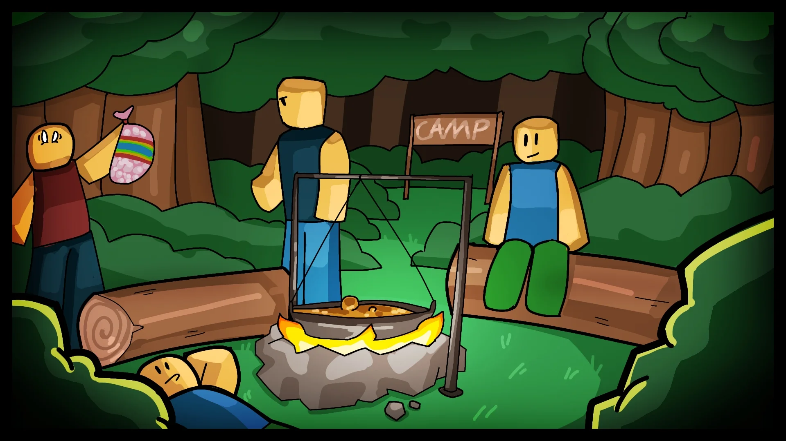
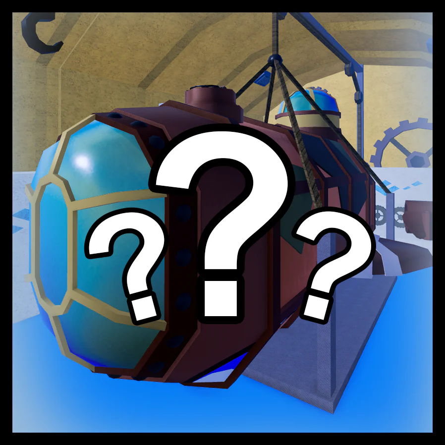

The Blox Bulletin
Encre Fraîche, Nouvelles Fraîches : Le Numéro #005 est Arrivé
Chaîne 4 : Fruitcast News
On est de retour ! Après des semaines de silence et un fâcheux incident météoritique au bureau, la salle de rédaction est de retour — plus grande, plus brillante, et avec 43 % de chaises supplémentaires !
Le nouveau QG est opérationnel et les presses tournent à nouveau. Laissez-nous vous remettre à jour.
Questions aux Développeurs #2
Réponses de l'Équipe
Engrenages en Marche, Esprits en Ébullition, et Critique Constructive Modérée
Par Boome E.R. Jenkins
De mon temps, les mers, c'était une question de courage, de timing et d'avoir l'œil aiguisé ! Pas de réaliser des cascades tape-à-l'œil comme si vous passiez une audition pour un show télévisé !
De nos jours, ces utilisateurs du Fruit Création traitent le monde comme un numéro de cirque ! J'ai vu quelqu'un ricocher sur un mur en plein combat et appeler ça des « tactiques de haut niveau ».
J'ai du respect pour la créativité... mais peut-être — juste peut-être — que ce pouvoir pourrait servir à construire quelque chose avec un peu plus de soin. Aider le monde à respirer à nouveau. Créer quelque chose qui dure. Pas tout ce qui vole doit décoller vers le ciel... peut-être quelque chose qui pourrait aider les autres à avancer, ou même laisser quelque chose de vert reprendre racine, qui sait !
Juste une pensée. Mais sérieusement, ça vaut la peine d'y réfléchir.
Le Parc d'État Rouvre ses Portes !
Par Twiggy LogleafLe parc d'État longtemps oublié est de retour — et c'est déjà un succès ! Les campeurs se rassemblent autour des feux de camp, y jetant viandes, herbes et mystérieuses pelures de fruits lumineux.
« Ce n'est pas juste dormir sous les étoiles, » dit un campeur. « C'est une connexion avec la nature — et avec des indices d'un ragoût lumineux qui parle. Mais qu'est-ce qu'il y avait dedans, au juste ? »


🏗 Montrez vos Créations du Fruit Création !
Vous avez construit quelque chose d'incroyable avec le Fruit Création ? On veut voir ça ! Soumettez vos meilleures constructions via ce formulaire : Soumettre une Création — et vous pourriez être mis en avant dans le prochain numéro !